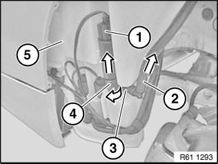

Headlamp Washer Pump: Service and Repair
61 67 010 Removing And Installing/replacing Washer Pump Of Headlight Washer System

Necessary preliminary tasks:
- Release fluid reservoir for windscreen washer system and pull out

Disconnect plug connection (1).
NOTE: Catch any escaping washer fluid if necessary.
Open split pin (3) and detach hose (2) from washer pump of headlight cleaning system (4).
If necessary, turn washer pump of headlight cleaning system (4) and pull out of fluid reservoir for windscreen washer system (5).

Installation:
- Replace strainer for washer pump of headlight washer system.
- Coat sealing ring of washer pump for headlight cleaning system with antiseize agent.
- Lay hose of washer pump for headlight cleaning system without kinks
- Fill fluid reservoir